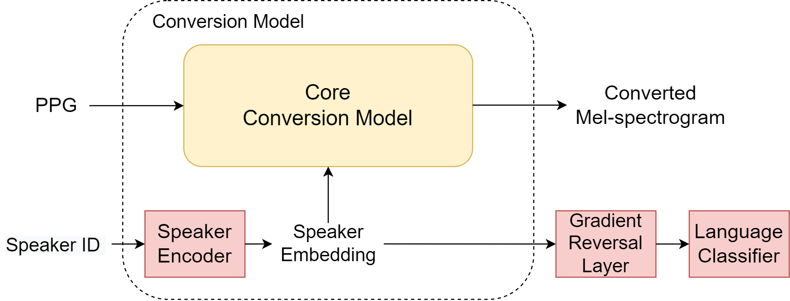

Abstract: In this work, we examine two methods for improving phonetic posteriorgram (PPG) based cross-lingual voice conversion (CLVC). Previous research usually utilized a speaker encoder to characterize speakers' identity; however, the speaker embedding learned by the previous model tends to be language-dependent, degrading the performance of converted speeches. Therefore, we propose using the technique of domain-adversarial training. With this approach, the speaker embedding in different languages can be adapted into the same distribution to form a language-independent speaker embedding space. The other approach we propose is to employ external language conditioning to support our model to disentangle the language information from the speaker embedding. In our experiments, both methods are objectively evaluated on a Japanese-English bilingual database. Two automatic objective assessment systems are adopted to assess the quality and speaker similarity of converted utterances. According to the experimental results, the two methods can generate speaker embedding with reduced language dependency and improve the naturalness and speaker similarity of converted speeches.
Models
Baseline: PPG-CLVC
Figure 1. The conventional framework of PPG-based CLVC
Proposal 1: DAT-PPG-CLVC

Figure 2. The proposed framework of the conversion model in PPG-based CLVC with the domain adversarial training technique during the training phase.
Proposal 2: LAN-PPG-CLVC
Figure 3. The proposed framework, PPG-based CLVC with language conditioning mechanism.